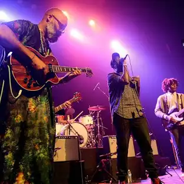

"Wait for Me "
Doubter,think again:The kings of leon are back,and are still totally the Kings of leons.The latest taste of Mechanical Bull (out september 24th) is a supersize power ballad that's guaranteed to get arena crowd waving their smartphones in the air.
"rollercoaster"
This New York crew down with everyone from Papa roach to Matt pinifield- and you can hear awesome echoes of big Nineties rock all over this breezy,crunchy jam.
"mercy"
there are ton of art - rock bands in Brooklyn, but none of them do it quite like these OGs.Their first single since 2011 is a superconcentrated dose of electric fuzz.Welcome back, dudes!
.webp)
"Your life is a lie " video
singing skeletons and a talking dolphin are the least freacky parts of this awesomely wierd clip for the psych-pop duo's very catchy,waylysergic new single.
"pretty green
Garage - rock nugget don't get much tastier than this loose groove from the Austin crew's jeff Tweedy-assisted LP, corsicana Lemonade.Wooo!
.webp)
The greatest Auto- Tuned auteur since T-Pain (remember him? ) returns with a gloriously slurred club jam about awesome he is."i'm a rock star for life he warbles."i'm just being honest."Thanks,buddy!
This New York disco orchestra is so good at re-creating the sound of the seventies we're startns to think it has accessed a secert time portal to studio 54.This jumping blast of a single doesn't exactly disaprove our theory